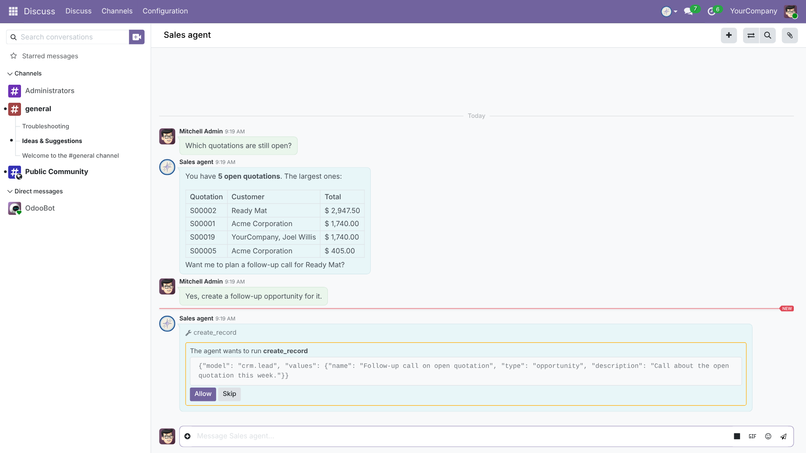
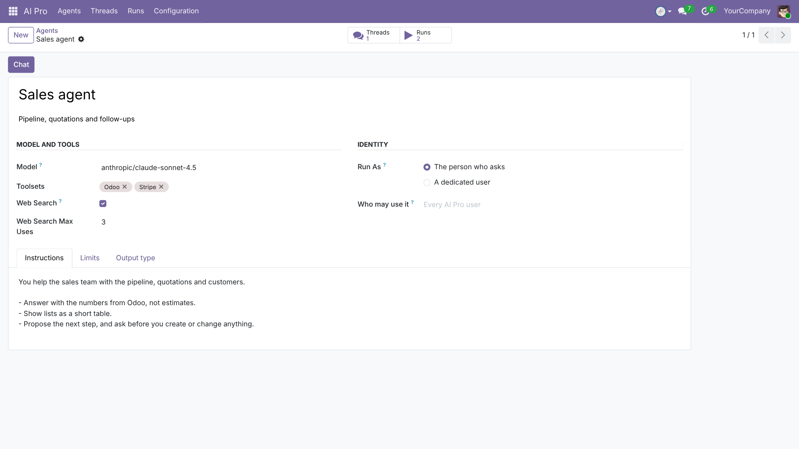
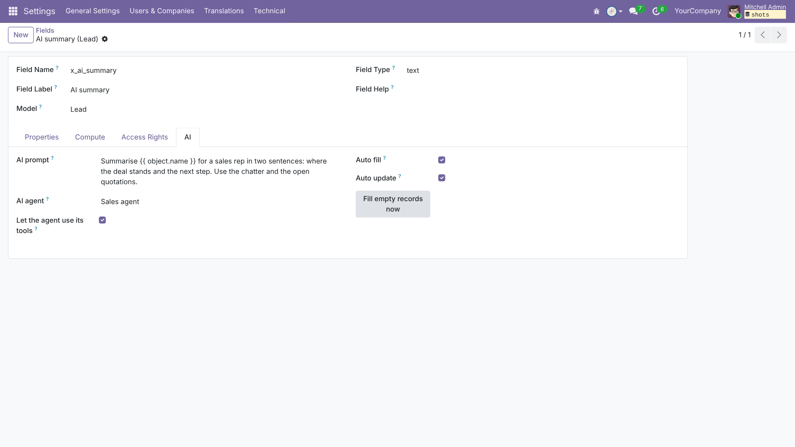

AI agents in Odoo, with you in control.
Bring your own OpenRouter key and pick any model, per agent. You pay the model host directly and see the cost of every run.
Agents search, total, create and update Odoo records. Add a server action to a toolset and it becomes a tool. Add any MCP server as a toolset.
An agent runs with an Odoo user's rights, never more. It asks before it creates or changes a record, and you can stop it mid-answer.
The chat is Odoo's own Discuss. Answers come from your data, and nothing changes until you press Allow.

Each agent has its own instructions, model, toolsets, limits and web search, and runs as the person who asks or as a dedicated user.

Write a prompt on any stored field. The agent fills empty records and updates values whose inputs changed. A value someone typed stays.

"Run AI agent" works in automation rules and scheduled actions, and posts its answer in the record's chatter. Community and Enterprise, Odoo 19 and 20. Requires a connection to Pantalytics.